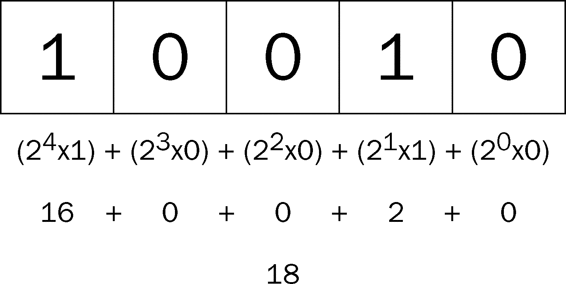
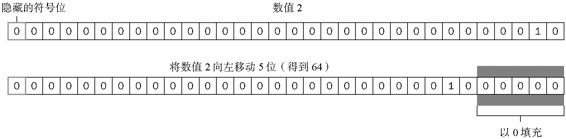
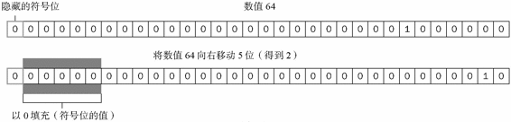

ECMA-262描述了一组用于操作数据值的操作符，包括算术操作符（如加号和减号）、位操作符、关系操作符和相等操作符。ECMAScript操作符的与众不同之处在于，它们能够适用于很多值，例如字符串、数字值、布尔值，甚至对象。不过，在应用于对象时，相应的操作符通常都会调用对象的valueOf()和（或）toString()方法，以便取得可以操作的值。
只能操作一个值的操作符叫做一元操作符。一元操作符是ECMAScript中最简单的操作符。
1. 递增和递减操作符
递增和递减操作符直接借鉴自C，而且各有两个版本：前置型和后置型。顾名思义，前置型应该位于要操作的变量之前，而后置型则应该位于要操作的变量之后。因此，在使用前置递增操作符给一个数值加1时，要把两个加号（++）放在这个数值变量前面，如下所示：
var age = 29;
++age;
在这个例子中，前置递增操作符把age的值变成了30（为29加上了1）。实际上，执行这个前置递增操作与执行以下操作的效果相同：
var age = 29; age = age + 1;
执行前置递减操作的方法也类似，结果会从一个数值中减去1。使用前置递减操作符时，要把两个减号（--）放在相应变量的前面，如下所示：
var age = 29; --age;
这样，age变量的值就减少为28（从29中减去了1）。
执行前置递增和递减操作时，变量的值都是在语句被求值以前改变的。（在计算机科学领域，这种情况通常被称作副效应。）请看下面这个例子。
var age = 29;
var anotherAge = --age + 2;
alert(age); // 输出28
alert(anotherAge); // 输出30
IncrementDecrementExample01.htm
这个例子中变量anotherAge的初始值等于变量age的值前置递减之后加2。由于先执行了减法操作，age的值变成了28，所以再加上2的结果就是30。
由于前置递增和递减操作与执行语句的优先级相等，因此整个语句会从左至右被求值。再看一个例子：
var num1 = 2;
var num2 = 20;
var num3 = --num1 + num2; // 等于21
var num4 = num1 + num2; // 等于21
IncrementDecrementExample02.htm
在这里，num3之所以等于21是因为num1先减去了1才与num2相加。而变量num4也等于21是因为相应的加法操作使用了num1减去1之后的值。
后置型递增和递减操作符的语法不变（仍然分别是++和--），只不过要放在变量的后面而不是前面。后置递增和递减与前置递增和递减有一个非常重要的区别，即递增和递减操作是在包含它们的语句被求值之后才执行的。这个区别在某些情况下不是什么问题，例如：
var age = 29; age++;
把递增操作符放在变量后面并不会改变语句的结果，因为递增是这条语句的唯一操作。但是，当语句中还包含其他操作时，上述区别就会非常明显了。请看下面的例子：
var num1 = 2; var num2 = 20; var num3 = num1-- + num2; // 等于22 var num4 = num1 + num2; // 等于21
IncrementDecrementExample03.htm
这里仅仅将前置递减改成了后置递减，就立即可以看到差别。在前面使用前置递减的例子中，num3和num4最后都等于21。而在这个例子中，num3等于22，num4等于21。差别的根源在于，这里在计算num3时使用了num1的原始值（2）完成了加法计算，而num4则使用了递减后的值（1）。
所有这4个操作符对任何值都适用，也就是它们不仅适用于整数，还可以用于字符串、布尔值、浮点数值和对象。在应用于不同的值时，递减和递减操作符遵循下列规则。
在应用于一个包含有效数字字符的字符串时，先将其转换为数字值，再执行加减1的操作。字符串变量变成数值变量。
在应用于一个不包含有效数字字符的字符串时，将变量的值设置为NaN（第4章将详细讨论）。字符串变量变成数值变量。
在应用于布尔值false时，先将其转换为0再执行加减1的操作。布尔值变量变成数值变量。
在应用于布尔值true时，先将其转换为1再执行加减1的操作。布尔值变量变成数值变量。
在应用于浮点数值时，执行加减1的操作。
在应用于对象时，先调用对象的valueOf()方法（第5章将详细讨论）以取得一个可供操作的值。然后对该值应用前述规则。如果结果是NaN，则在调用toString()方法后再应用前述规则。对象变量变成数值变量。
以下示例展示了上面的一些规则：
var s1 = "2";
var s2 = "z";
var b = false;
var f = 1.1;
var o = {
valueOf: function() {
return -1;
}
};
s1++; // 值变成数值3
s2++; // 值变成NaN
b++; // 值变成数值1
f--; // 值变成0.10000000000000009（由于浮点舍入错误所致）
o--; // 值变成数值-2
IncrementDecrementExample04.htm
2. 一元加和减操作符
绝大多数开发人员对一元加和减操作符都不会陌生，而且这两个ECMAScript操作符的作用与数学书上讲的完全一样。一元加操作符以一个加号（+）表示，放在数值前面，对数值不会产生任何影响，如下面的例子所示：
var num = 25;
num = +num; // 仍然是25
不过，在对非数值应用一元加操作符时，该操作符会像Number()转型函数一样对这个值执行转换。换句话说，布尔值false和true将被转换为0和1，字符串值会被按照一组特殊的规则进行解析，而对象是先调用它们的valueOf()和（或）toString()方法，再转换得到的值。
下面的例子展示了对不同数据类型应用一元加操作符的结果：
var s1 = "01";
var s2 = "1.1";
var s3 = "z";
var b = false;
var f = 1.1;
var o = {
valueOf: function() {
return -1;
}
};
s1 = +s1; // 值变成数值1
s2 = +s2; // 值变成数值1.1
s3 = +s3; // 值变成NaN
b = +b; // 值变成数值0
f = +f; // 值未变，仍然是1.1
o = +o; // 值变成数值-1
UnaryPlusMinusExample01.htm
一元减操作符主要用于表示负数，例如将1转换成-1。下面的例子演示了这个简单的转换过程：
var num = 25;
num = -num; // 变成了-25
在将一元减操作符应用于数值时，该值会变成负数（如上面的例子所示）。而当应用于非数值时，一元减操作符遵循与一元加操作符相同的规则，最后再将得到的数值转换为负数，如下面的例子所示：
var s1 = "01";
var s2 = "1.1";
var s3 = "z";
var b = false;
var f = 1.1;
var o = {
valueOf: function() {
return -1;
}
};
s1 = -s1; // 值变成了数值-1
s2 = -s2; // 值变成了数值-1.1
s3 = -s3; // 值变成了NaN
b = -b; // 值变成了数值0
f = -f; // 变成了-1.1
o = -o; // 值变成了数值1
UnaryPlusMinusExample02.htm
一元加和减操作符主要用于基本的算术运算，也可以像前面示例所展示的一样用于转换数据类型。
位操作符用于在最基本的层次上，即按内存中表示数值的位来操作数值。ECMAScript中的所有数值都以IEEE-754 64位格式存储，但位操作符并不直接操作64位的值。而是先将64位的值转换成32位的整数，然后执行操作，最后再将结果转换回64位。对于开发人员来说，由于64位存储格式是透明的，因此整个过程就像是只存在32位的整数一样。
对于有符号的整数，32位中的前31位用于表示整数的值。第32位用于表示数值的符号：0表示正数，1表示负数。这个表示符号的位叫做符号位，符号位的值决定了其他位数值的格式。其中，正数以纯二进制格式存储，31位中的每一位都表示2的幂。第一位（叫做位0）表示20，第二位表示21，以此类推。没有用到的位以0填充，即忽略不计。例如，数值18的二进制表示是00000000000000000000000000010010，或者更简洁的10010。这是5个有效位，这5位本身就决定了实际的值（如图3-1所示）。

图 3-1
负数同样以二进制码存储，但使用的格式是二进制补码。计算一个数值的二进制补码，需要经过下列3个步骤：
求这个数值绝对值的二进制码（例如，要求-18的二进制补码，先求18的二进制码）；
求二进制反码，即将0替换为1，将1替换为0；
得到的二进制反码加1。
要根据这3个步骤求得-18的二进制码，首先就要求得18的二进制码，即：
0000 0000 0000 0000 0000 0000 0001 0010
然后，求其二进制反码，即0和1互换：
1111 1111 1111 1111 1111 1111 1110 1101
最后，二进制反码加1：
1111 1111 1111 1111 1111 1111 1110 1101
1
---------------------------------------
1111 1111 1111 1111 1111 1111 1110 1110
这样，就求得了-18的二进制表示，即11111111111111111111111111101110。要注意的是，在处理有符号整数时，是不能访问位31的。
ECMAScript会尽力向我们隐藏所有这些信息。换句话说，在以二进制字符串形式输出一个负数时，我们看到的只是这个负数绝对值的二进制码前面加上了一个负号。如下面的例子所示：
var num = -18;
alert(num.toString(2)); // "-10010"
要把数值-18转换成二进制字符串时，得到的结果是"-10010"。这说明转换过程理解了二进制补码并将其以更合乎逻辑的形式展示了出来。
默认情况下，ECMAScript中的所有整数都是有符号整数。不过，当然也存在无符号整数。对于无符号整数来说，第32位不再表示符号，因为无符号整数只能是正数。而且，无符号整数的值可以更大，因为多出的一位不再表示符号，可以用来表示数值。
在ECMAScript中，当对数值应用位操作符时，后台会发生如下转换过程：64位的数值被转换成32位数值，然后执行位操作，最后再将32位的结果转换回64位数值。这样，表面上看起来就好像是在操作32位数值，就跟在其他语言中以类似方式执行二进制操作一样。但这个转换过程也导致了一个严重的副效应，即在对特殊的NaN和Infinity值应用位操作时，这两个值都会被当成0来处理。
如果对非数值应用位操作符，会先使用Number()函数将该值转换为一个数值（自动完成），然后再应用位操作。得到的结果将是一个数值。
1. 按位非（NOT）
按位非操作符由一个波浪线（~）表示，执行按位非的结果就是返回数值的反码。按位非是ECMAScript操作符中少数几个与二进制计算有关的操作符之一。下面看一个例子：
var num1 = 25; // 二进制00000000000000000000000000011001
var num2 = ~num1; // 二进制11111111111111111111111111100110
alert(num2); // -26
BitwiseNotExample01.htm
这里，对25执行按位非操作，结果得到了-26。这也验证了按位非操作的本质：操作数的负值减1。因此，下面的代码也能得到相同的结果：
var num1 = 25;
var num2 = -num1 - 1;
alert(num2); // "-26"
虽然以上代码也能返回同样的结果，但由于按位非是在数值表示的最底层执行操作，因此速度更快。
2. 按位与（AND）
按位与操作符由一个和号字符（&）表示，它有两个操作符数。从本质上讲，按位与操作就是将两个数值的每一位对齐，然后根据下表中的规则，对相同位置上的两个数执行AND操作：
| 第一个数值的位 | 第二个数值的位 | 结 果 |
|---|---|---|
| 1 | 1 | 1 |
| 1 | 0 | 0 |
| 0 | 1 | 0 |
| 0 | 0 | 0 |
简而言之，按位与操作只在两个数值的对应位都是1时才返回1，任何一位是0，结果都是0。
下面看一个对25和3执行按位与操作的例子：
var result = 25 & 3;
alert(result); //1
BitwiseAndExample01.htm
可见，对25和3执行按位与操作的结果是1。为什么呢？请看其底层操作：
25 = 0000 0000 0000 0000 0000 0000 0001 1001
3 = 0000 0000 0000 0000 0000 0000 0000 0011
---------------------------------------------
AND = 0000 0000 0000 0000 0000 0000 0000 0001
原来，25和3的二进制码对应位上只有一位同时是1，而其他位的结果自然都是0，因此最终结果等于1。
3. 按位或（OR）
按位或操作符由一个竖线符号（|）表示，同样也有两个操作数。按位或操作遵循下面这个真值表。
| 第一个数值的位 | 第二个数值的位 | 结 果 |
|---|---|---|
| 1 | 1 | 1 |
| 1 | 0 | 1 |
| 0 | 1 | 1 |
| 0 | 0 | 0 |
由此可见，按位或操作在有一个位是1的情况下就返回1，而只有在两个位都是0的情况下才返回0。
如果在前面按位与的例子中对25和3执行按位或操作，则代码如下所示：
var result = 25 | 3;
alert(result); //27
BitwiseOrExample01.htm
25与3按位或的结果是27：
25 = 0000 0000 0000 0000 0000 0000 0001 1001
3 = 0000 0000 0000 0000 0000 0000 0000 0011
--------------------------------------------
OR = 0000 0000 0000 0000 0000 0000 0001 1011
这两个数值的都包含4个1，因此可以把每个1直接放到结果中。二进制码11011等于十进制值27。
4. 按位异或（XOR）
按位异或操作符由一个插入符号（^）表示，也有两个操作数。以下是按位异或的真值表。
| 第一个数值的位 | 第二个数值的位 | 结 果 |
|---|---|---|
| 1 | 1 | 0 |
| 1 | 0 | 1 |
| 0 | 1 | 1 |
| 0 | 0 | 0 |
按位异或与按位或的不同之处在于，这个操作在两个数值对应位上只有一个1时才返回1，如果对应的两位都是1或都是0，则返回0。
对25和3执行按位异或操作的代码如下所示：
var result = 25 ^ 3;
alert(result); //26
BitwiseXorExample01.htm
25与3按位异或的结果是26，其底层操作如下所示：
25 = 0000 0000 0000 0000 0000 0000 0001 1001
3 = 0000 0000 0000 0000 0000 0000 0000 0011
---------------------------------------------
XOR = 0000 0000 0000 0000 0000 0000 0001 1010
这两个数值都包含4个1，但第一位上则都是1，因此结果的第一位变成了0。而其他位上的1在另一个数值中都没有对应的1，可以直接放到结果中。二进制码11010等于十进制值26（注意这个结果比执行按位或时小1）。
5. 左移
左移操作符由两个小于号（<<）表示，这个操作符会将数值的所有位向左移动指定的位数。例如，如果将数值2（二进制码为10）向左移动5位，结果就是64（二进制码为1000000），代码如下所示：
var oldValue = 2; // 等于二进制的10
var newValue = oldValue << 5; // 等于二进制的1000000，十进制的64
LeftShiftExample01.htm
注意，在向左移位后，原数值的右侧多出了5个空位。左移操作会以0来填充这些空位，以便得到的结果是一个完整的32位二进制数（见图3-2）。

图 3-2
注意，左移不会影响操作数的符号位。换句话说，如果将-2向左移动5位，结果将是-64，而非64。
6. 有符号的右移
有符号的右移操作符由两个大于号（>>）表示，这个操作符会将数值向右移动，但保留符号位（即正负号标记）。有符号的右移操作与左移操作恰好相反，即如果将64向右移动5位，结果将变回2：
var oldValue = 64; // 等于二进制的1000000
var newValue = oldValue >> 5; // 等于二进制的10 ，即十进制的2
SignedRightShiftExample01.htm
同样，在移位过程中，原数值中也会出现空位。只不过这次的空位出现在原数值的左侧、符号位的右侧（见图3-3）。而此时ECMAScript会用符号位的值来填充所有空位，以便得到一个完整的值。

图 3-3
7. 无符号右移
无符号右移操作符由3个大于号（>>>）表示，这个操作符会将数值的所有32位都向右移动。对正数来说，无符号右移的结果与有符号右移相同。仍以前面有符号右移的代码为例，如果将64无符号右移5位，结果仍然还是2：
var oldValue = 64; // 等于二进制的1000000
var newValue = oldValue >>> 5; // 等于二进制的10 ，即十进制的2
UnsignedRightShiftExample01.htm
但是对负数来说，情况就不一样了。首先，无符号右移是以0来填充空位，而不是像有符号右移那样以符号位的值来填充空位。所以，对正数的无符号右移与有符号右移结果相同，但对负数的结果就不一样了。其次，无符号右移操作符会把负数的二进制码当成正数的二进制码。而且，由于负数以其绝对值的二进制补码形式表示，因此就会导致无符号右移后的结果非常之大，如下面的例子所示：
var oldValue = -64; // 等于二进制的11111111111111111111111111000000 var newValue = oldValue >>> 5; // 等于十进制的134217726
UnsignedRightShiftExample02.htm
这里，当对-64执行无符号右移5位的操作后，得到的结果是134217726。之所以结果如此之大，是因为-64的二进制码为11111111111111111111111111000000，而且无符号右移操作会把这个二进制码当成正数的二进制码，换算成十进制就是4294967232。如果把这个值右移5位，结果就变成了00000111111111111111111111111110，即十进制的134217726。
在一门编程语言中，布尔操作符的重要性堪比相等操作符。如果没有测试两个值关系的能力，那么诸如if...else和循环之类的语句就不会有用武之地了。布尔操作符一共有3个：非（NOT）、与（AND）和或（OR）。
1. 逻辑非
逻辑非操作符由一个叹号（！）表示，可以应用于ECMAScript中的任何值。无论这个值是什么数据类型，这个操作符都会返回一个布尔值。逻辑非操作符首先会将它的操作数转换为一个布尔值，然后再对其求反。也就是说，逻辑非操作符遵循下列规则：
如果操作数是一个对象，返回false；
如果操作数是一个空字符串，返回true；
如果操作数是一个非空字符串，返回false；
如果操作数是数值0，返回true；
如果操作数是任意非0数值（包括Infinity），返回false；
如果操作数是null，返回true；
如果操作数是NaN，返回true；
如果操作数是undefined，返回true。
下面几个例子展示了应用上述规则的结果：
alert(!false); // true
alert(!"blue"); // false
alert(!0); // true
alert(!NaN); // true
alert(!""); // true
alert(!12345); // false
LogicalNotExample01.htm
逻辑非操作符也可以用于将一个值转换为与其对应的布尔值。而同时使用两个逻辑非操作符，实际上就会模拟Boolean()转型函数的行为。其中，第一个逻辑非操作会基于无论什么操作数返回一个布尔值，而第二个逻辑非操作则对该布尔值求反，于是就得到了这个值真正对应的布尔值。当然，最终结果与对这个值使用Boolean()函数相同，如下面的例子所示：
alert(!!"blue"); //true
alert(!!0); //false
alert(!!NaN); //false
alert(!!""); //false
alert(!!12345); //true
LogicalNotExample02.htm
2. 逻辑与
逻辑与操作符由两个和号（&&）表示，有两个操作数，如下面的例子所示：
var result = true && false;
逻辑与的真值表如下：
| 第一个操作数 | 第二个操作数 | 结 果 |
|---|---|---|
true |
true |
true |
true |
false |
false |
false |
true |
false |
false |
false |
false |
逻辑与操作可以应用于任何类型的操作数，而不仅仅是布尔值。在有一个操作数不是布尔值的情况下，逻辑与操作就不一定返回布尔值；此时，它遵循下列规则：
如果第一个操作数是对象，则返回第二个操作数；
如果第二个操作数是对象，则只有在第一个操作数的求值结果为true的情况下才会返回该对象；
如果两个操作数都是对象，则返回第二个操作数；
如果有一个操作数是null，则返回null；
如果有一个操作数是NaN，则返回NaN；
如果有一个操作数是undefined，则返回undefined。
逻辑与操作属于短路操作，即如果第一个操作数能够决定结果，那么就不会再对第二个操作数求值。对于逻辑与操作而言，如果第一个操作数是false，则无论第二个操作数是什么值，结果都不再可能是true了。来看下面的例子：
var found = true;
var result = (found && someUndefinedVariable); // 这里会发生错误
alert(result); // 这一行不会执行
LogicalAndExample01.htm
在上面的代码中，当执行逻辑与操作时会发生错误，因为变量someUndefinedVariable没有声明。由于变量found的值是true，所以逻辑与操作符会继续对变量someUndefinedVariable求值。但someUndefinedVariable尚未定义，因此就会导致错误。这说明不能在逻辑与操作中使用未定义的值。如果像下面这个例中一样，将found的值设置为false，就不会发生错误了：
var found = false; var result = (found && someUndefinedVariable); // 不会发生错误 alert(result); // 会执行（"false"）
LogicalAndExample02.htm
在这个例子中，警告框会显示出来。无论变量someUndefinedVariable有没有定义，也永远不会对它求值，因为第一个操作数的值是false。而这也就意味着逻辑与操作的结果必定是false，根本用不着再对&&右侧的操作数求值了。在使用逻辑与操作符时要始终铭记它是一个短路操作符。
3. 逻辑或
逻辑或操作符由两个竖线符号（||）表示，有两个操作数，如下面的例子所示：
var result = true || false;
逻辑或的真值表如下：
| 第一个操作数 | 第二个操作数 | 结 果 |
|---|---|---|
True |
true |
true |
True |
false |
true |
false |
true |
true |
false |
false |
false |
与逻辑与操作相似，如果有一个操作数不是布尔值，逻辑或也不一定返回布尔值；此时，它遵循下列规则：
如果第一个操作数是对象，则返回第一个操作数；
如果第一个操作数的求值结果为false，则返回第二个操作数；
如果两个操作数都是对象，则返回第一个操作数；
如果两个操作数都是null，则返回null；
如果两个操作数都是NaN，则返回NaN；
如果两个操作数都是undefined，则返回undefined。
与逻辑与操作符相似，逻辑或操作符也是短路操作符。也就是说，如果第一个操作数的求值结果为true，就不会对第二个操作数求值了。下面看一个例子：
var found = true;
var result = (found || someUndefinedVariable); // 不会发生错误
alert(result); // 会执行（"true"）
LogicalOrExample01.htm
这个例子跟前面的例子一样，变量someUndefinedVariable也没有定义。但是，由于变量found的值是true，而变量someUndefinedVariable永远不会被求值，因此结果就会输出"true"。如果像下面这个例子一样，把found的值改为false，就会导致错误：
var found = false; var result = (found || someUndefinedVariable); // 这里会发生错误 alert(result); // 这一行不会执行
LogicalOrExample02.htm
我们可以利用逻辑或的这一行为来避免为变量赋null或undefined值。例如：
var myObject = preferredObject || backupObject;
在这个例子中，变量myObject将被赋予等号后面两个值中的一个。变量preferredObject中包含优先赋给变量myObject的值，变量backupObject负责在preferredObject中不包含有效值的情况下提供后备值。如果preferredObject的值不是null，那么它的值将被赋给myObject；如果是null，则将backupObject的值赋给myObject。ECMAScript程序的赋值语句经常会使用这种模式，本书也将采用这种模式。
ECMAScript定义了3个乘性操作符：乘法、除法和求模。这些操作符与Java、C或者Perl中的相应操作符用途类似，只不过在操作数为非数值的情况下会执行自动的类型转换。如果参与乘法计算的某个操作数不是数值，后台会先使用Number()转型函数将其转换为数值。也就是说，空字符串将被当作0，布尔值true将被当作1。
1. 乘法
乘法操作符由一个星号（*）表示，用于计算两个数值的乘积。其语法类似于C，如下面的例子所示：
var result = 34 * 56;
在处理特殊值的情况下，乘法操作符遵循下列特殊的规则：
如果操作数都是数值，执行常规的乘法计算，即两个正数或两个负数相乘的结果还是正数，而如果只有一个操作数有符号，那么结果就是负数。如果乘积超过了ECMAScript数值的表示范围，则返回Infinity或-Infinity；
如果有一个操作数是NaN，则结果是NaN；
如果是Infinity与0相乘，则结果是NaN；
如果是Infinity与非0数值相乘，则结果是Infinity或-Infinity，取决于有符号操作数的符号；
如果是Infinity与Infinity相乘，则结果是Infinity；
如果有一个操作数不是数值，则在后台调用Number()将其转换为数值，然后再应用上面的
规则。
2. 除法
除法操作符由一个斜线符号（/）表示，执行第二个操作数除第一个操作数的计算，如下面的例子所示：
var result = 66 / 11;
与乘法操作符类似，除法操作符对特殊的值也有特殊的处理规则。这些规则如下：
如果操作数都是数值，执行常规的除法计算，即两个正数或两个负数相除的结果还是正数，而如果只有一个操作数有符号，那么结果就是负数。如果商超过了ECMAScript数值的表示范围，则返回Infinity或-Infinity；
如果有一个操作数是NaN，则结果是NaN；
如果是Infinity被Infinity除，则结果是NaN；
如果是零被零除，则结果是NaN；
如果是非零的有限数被零除，则结果是Infinity或-Infinity，取决于有符号操作数的符号；
如果是Infinity被任何非零数值除，则结果是Infinity或-Infinity，取决于有符号操作数的符号；
如果有一个操作数不是数值，则在后台调用Number()将其转换为数值，然后再应用上面的规则。
3. 求模
求模（余数）操作符由一个百分号（%）表示，用法如下：
var result = 26 % 5; // 等于1
与另外两个乘性操作符类似，求模操作符会遵循下列特殊规则来处理特殊的值：
如果操作数都是数值，执行常规的除法计算，返回除得的余数；
如果被除数是无穷大值而除数是有限大的数值，则结果是NaN；
如果被除数是有限大的数值而除数是零，则结果是NaN；
如果是Infinity被Infinity除，则结果是NaN；
如果被除数是有限大的数值而除数是无穷大的数值，则结果是被除数；
如果被除数是零，则结果是零；
如果有一个操作数不是数值，则在后台调用Number()将其转换为数值，然后再应用上面的规则。
加法和减法这两个加性操作符应该说是编程语言中最简单的算术操作符了。但是在ECMAScript中，这两个操作符却都有一系列的特殊行为。与乘性操作符类似，加性操作符也会在后台转换不同的数据类型。然而，对于加性操作符而言，相应的转换规则还稍微有点复杂。
1. 加法
加法操作符（+）的用法如下所示：
var result = 1 + 2;
如果两个操作符都是数值，执行常规的加法计算，然后根据下列规则返回结果：
如果有一个操作数是NaN，则结果是NaN；
如果是Infinity加Infinity，则结果是Infinity；
如果是-Infinity加-Infinity，则结果是-Infinity；
如果是Infinity加-Infinity，则结果是NaN；
如果是+0加+0，则结果是+0；
如果是-0加-0，则结果是-0；
如果是+0加-0，则结果是+0。
不过，如果有一个操作数是字符串，那么就要应用如下规则：
如果两个操作数都是字符串，则将第二个操作数与第一个操作数拼接起来；
如果只有一个操作数是字符串，则将另一个操作数转换为字符串，然后再将两个字符串拼接 起来。
如果有一个操作数是对象、数值或布尔值，则调用它们的toString()方法取得相应的字符串值，然后再应用前面关于字符串的规则。对于undefined和null，则分别调用String()函数并取得字符串"undefined"和"null"。
下面来举几个例子：
var result1 = 5 + 5; // 两个数值相加
alert(result1); // 10
var result2 = 5 + "5"; // 一个数值和一个字符串相加
alert(result2); // "55"
AddExample01.htm
以上代码演示了加法操作符在两种模式下的差别。第一行代码演示了正常的情况，即5+5等于10（数值）。但是，如果将一个操作数改为字符串"5"，结果就变成了"55"（字符串值），因为第一个操作数也被转换成了"5"。
忽视加法操作中的数据类型是ECMAScript编程中最常见的一个错误。再来看一个例子：
var num1 = 5;
var num2 = 10;
var message = "The sum of 5 and 10 is " + num1 + num2;
alert(message); // "The sum of 5 and 10 is 510"
AddExample02.htm
在这个例子中，变量message的值是执行两个加法操作之后的结果。有人可能以为最后得到的字符串是"The sum of 5 and 10 is 15"，但实际的结果却是"The sum of 5 and 10 is 510"。之所以会这样，是因为每个加法操作是独立执行的。第一个加法操作将一个字符串和一个数值（5）拼接了起来，结果是一个字符串。而第二个加法操作又用这个字符串去加另一个数值（10），当然也会得到一个字符串。如果想先对数值执行算术计算，然后再将结果与字符串拼接起来，应该像下面这样使用圆括号：
var num1 = 5; var num2 = 10; var message = "The sum of 5 and 10 is " + (num1 + num2); alert(message); //"The sum of 5 and 10 is 15"
AddExample03.htm
在这个例子中，一对圆括号把两个数值变量括在了一起，这样就会告诉解析器先计算其结果，然后再将结果与字符串拼接起来。因此，就得到了结果"The sum of 5 and 10 is 15"。
2. 减法
减法操作符（-）是另一个极为常用的操作符，其用法如下所示：
var result = 2 - 1;
与加法操作符类似，ECMAScript中的减法操作符在处理各种数据类型转换时，同样需要遵循一些特殊规则，如下所示：
如果两个操作符都是数值，则执行常规的算术减法操作并返回结果；
如果有一个操作数是NaN，则结果是NaN；
如果是Infinity减Infinity，则结果是NaN；
如果是-Infinity减-Infinity，则结果是NaN；
如果是Infinity减-Infinity，则结果是Infinity；
如果是-Infinity减Infinity，则结果是-Infinity；
如果是+0减+0，则结果是+0；
如果是+0减-0，则结果是-0；
如果是-0减-0，则结果是+0；
如果有一个操作数是字符串、布尔值、null或undefined，则先在后台调用Number()函数将其转换为数值，然后再根据前面的规则执行减法计算。如果转换的结果是NaN，则减法的结果就是NaN；
如果有一个操作数是对象，则调用对象的valueOf()方法以取得表示该对象的数值。如果得到的值是NaN，则减法的结果就是NaN。如果对象没有valueOf()方法，则调用其toString()方法并将得到的字符串转换为数值。
下面几个例子展示了上面的规则：
var result1 = 5 - true; // 4，因为true被转换成了1
var result2 = NaN - 1; // NaN
var result3 = 5 - 3; // 2
var result4 = 5 - ""; // 5，因为"" 被转换成了0
var result5 = 5 - "2"; // 3，因为"2"被转换成了2
var result6 = 5 - null; // 5，因为null被转换成了0
SubtractExample01.htm
小于（<）、大于（>）、小于等于（<=）和大于等于（>=）这几个关系操作符用于对两个值进行比较，比较的规则与我们在数学课上所学的一样。这几个操作符都返回一个布尔值，如下面的例子所示：
var result1 = 5 > 3; //true
var result2 = 5 < 3; //false
RelationalOperatorsExample01.htm中包含本节所有的代码片段
与ECMAScript中的其他操作符一样，当关系操作符的操作数使用了非数值时，也要进行数据转换或完成某些奇怪的操作。以下就是相应的规则。
如果两个操作数都是数值，则执行数值比较。
如果两个操作数都是字符串，则比较两个字符串对应的字符编码值。
如果一个操作数是数值，则将另一个操作数转换为一个数值，然后执行数值比较。
如果一个操作数是对象，则调用这个对象的valueOf()方法，用得到的结果按照前面的规则执行比较。如果对象没有valueOf()方法，则调用toString()方法，并用得到的结果根据前面的规则执行比较。
如果一个操作数是布尔值，则先将其转换为数值，然后再执行比较。
在使用关系操作符比较两个字符串时，会执行一种奇怪的操作。很多人都会认为，在比较字符串值时，小于的意思是“在字母表中的位置靠前”，而大于则意味着“在字母表中的位置靠后”，但实际上完全不是那么回事。在比较字符串时，实际比较的是两个字符串中对应位置的每个字符的字符编码值。经过这么一番比较之后，再返回一个布尔值。由于大写字母的字符编码全部小于小写字母的字符编码，因此我们就会看到如下所示的奇怪现象：
var result = "Brick" < "alphabet"; //true
在这个例子中，字符串"Brick"被认为小于字符串"alphabet"。原因是字母B的字符编码为66，而字母a的字符编码是97。如果要真正按字母表顺序比较字符串，就必须把两个操作数转换为相同的大小写形式（全部大写或全部小写），然后再执行比较，如下所示：
var result = "Brick".toLowerCase() < "alphabet".toLowerCase(); //false
通过将两个操作数都转换为小写形式，就可以得出"alphabet"按字母表顺序排在"Brick"之前的正确判断了。
另一种奇怪的现象发生在比较两个数字字符串的情况下，比如下面这个例子：
var result = "23" < "3"; //true
确实，当比较字符串"23"是否小于"3"时，结果居然是true。这是因为两个操作数都是字符串，而字符串比较的是字符编码（"2"的字符编码是50，而"3"的字符编码是51）。不过，如果像下面例子中一样，将一个操作数改为数值，比较的结果就正常了：
var result = "23" < 3; //false
此时，字符串"23"会被转换成数值23，然后再与3进行比较，因此就会得到合理的结果。在比较数值和字符串时，字符串都会被转换成数值，然后再以数值方式与另一个数值比较。当然，这个规则对前面的例子是适用的。可是，如果那个字符串不能被转换成一个合理的数值呢？比如：
var result = "a" < 3; // false，因为"a"被转换成了NaN
由于字母"a"不能转换成合理的数值，因此就被转换成了NaN。根据规则，任何操作数与NaN进行关系比较，结果都是false。于是，就出现了下面这个有意思的现象：
var result1 = NaN < 3; //false
var result2 = NaN >= 3; //false
按照常理，如果一个值不小于另一个值，则一定是大于或等于那个值。然而，在与NaN进行比较时，这两个比较操作的结果都返回了false。
确定两个变量是否相等是编程中的一个非常重要的操作。在比较字符串、数值和布尔值的相等性时，问题还比较简单。但在涉及到对象的比较时，问题就变得复杂了。最早的ECMAScript中的相等和不等操作符会在执行比较之前，先将对象转换成相似的类型。后来，有人提出了这种转换到底是否合理的质疑。最后，ECMAScript的解决方案就是提供两组操作符：相等和不相等——先转换再比较，全等和不全等——仅比较而不转换。
1. 相等和不相等
ECMAScript中的相等操作符由两个等于号（==）表示，如果两个操作数相等，则返回true。而不相等操作符由叹号后跟等于号（!=）表示，如果两个操作数不相等，则返回true。这两个操作符都会先转换操作数（通常称为强制转型），然后再比较它们的相等性。
在转换不同的数据类型时，相等和不相等操作符遵循下列基本规则：
如果有一个操作数是布尔值，则在比较相等性之前先将其转换为数值——false转换为0，而true转换为1；
如果一个操作数是字符串，另一个操作数是数值，在比较相等性之前先将字符串转换为数值；
如果一个操作数是对象，另一个操作数不是，则调用对象的valueOf()方法，用得到的基本类型值按照前面的规则进行比较；
这两个操作符在进行比较时则要遵循下列规则。
null和undefined是相等的。
要比较相等性之前，不能将null和undefined转换成其他任何值。
如果有一个操作数是NaN，则相等操作符返回false，而不相等操作符返回true。重要提示：即使两个操作数都是NaN，相等操作符也返回false；因为按照规则，NaN不等于NaN。
如果两个操作数都是对象，则比较它们是不是同一个对象。如果两个操作数都指向同一个对象，则相等操作符返回true；否则，返回false。
下表列出了一些特殊情况及比较结果：
| 表 达 式 | 值 | 表 达 式 | 值 |
|---|---|---|---|
null == undefined |
true |
true == 1 |
true |
"NaN" == NaN |
false |
true == 2 |
false |
5 == NaN |
false |
undefined == 0 |
false |
NaN == NaN |
false |
null == 0 |
false |
NaN != NaN |
true |
"5"==5 |
true |
false == 0 |
true |
2. 全等和不全等
除了在比较之前不转换操作数之外，全等和不全等操作符与相等和不相等操作符没有什么区别。全等操作符由3个等于号（===）表示，它只在两个操作数未经转换就相等的情况下返回true，如下面的例子所示：
var result1 = ("55" == 55); //true，因为转换后相等
var result2 = ("55" === 55); //false，因为不同的数据类型不相等
EqualityOperatorsExample02.htm
在这个例子中，第一个比较使用的是相等操作符比较字符串"55"和数值55，结果返回了true。如前所述，这是因为字符串"55"先被转换成了数值55，然后再与另一个数值55进行比较。第二个比较使用了全等操作符以不转换数值的方式比较同样的字符串和值。在不转换的情况下，字符串当然不等于数值，因此结果就是false。
不全等操作符由一个叹号后跟两个等于号（!==）表示，它在两个操作数未经转换就不相等的情况下返回true。例如：
var result1 = ("55" != 55); //false，因为转换后相等
var result2 = ("55" !== 55); //true，因为不同的数据类型不相等
EqualityOperatorsExample03.htm
在这个例子中，第一个比较使用了不相等操作符，而该操作符会将字符串"55"转换成55，结果就与第二个操作数（也是55）相等了。而由于这两个操作数被认为相等，因此就返回了false。第二个比较使用了不全等操作符。假如我们这样想：字符串55与数值55不相同吗？，那么答案一定是：是的（true）。
记住：null == undefined会返回true，因为它们是类似的值；但null === undefined会返回false，因为它们是不同类型的值。
条件操作符应该算是ECMAScript中最灵活的一种操作符了，而且它遵循与Java中的条件操作符相同的语法形式，如下面的例子所示：
variable = boolean_expression ? true_value : false_value;
本质上，这行代码的含义就是基于对boolean_expression求值的结果，决定给变量variable赋什么值。如果求值结果为true，则给变量variable赋true_value值；如果求值结果为false，则给变量variable赋false_value值。再看一个例子：
var max = (num1 > num2) ? num1 : num2;
在这个例子中，max中将会保存一个最大的值。这个表达式的意思是：如果num1大于num2（关系表达式返回true），则将num1的值赋给max；如果num1小于或等于num2（关系表达式返回false），则将num2的值赋给max。
简单的赋值操作符由等于号（=）表示，其作用就是把右侧的值赋给左侧的变量，如下面的例子所示：
var num = 10;
如果在等于号（=）前面再添加乘性操作符、加性操作符或位操作符，就可以完成复合赋值操作。这种复合赋值操作相当于是对下面常规表达式的简写形式：
var num = 10;
num = num + 10;
其中的第二行代码可以用一个复合赋值来代替：
var num = 10;
num += 10;
每个主要算术操作符（以及个别的其他操作符）都有对应的复合赋值操作符。这些操作符如下所示：
乘/赋值（*=）；
除/赋值（/=）；
模/赋值（%=）；
加/赋值（+=）；
减/赋值（-=）；
左移/赋值（<<=）；
有符号右移/赋值（>>=）；
无符号右移/赋值（>>>=）。
设计这些操作符的主要目的就是简化赋值操作。使用它们不会带来任何性能的提升。
使用逗号操作符可以在一条语句中执行多个操作，如下面的例子所示：
var num1=1, num2=2, num3=3;
逗号操作符多用于声明多个变量；但除此之外，逗号操作符还可以用于赋值。在用于赋值时，逗号操作符总会返回表达式中的最后一项，如下面的例子所示：
var num = (5, 1, 4, 8, 0); // num的值为0
由于0是表达式中的最后一项，因此num的值就是0。虽然逗号的这种使用方式并不常见，但这个例子可以帮我们理解逗号的这种行为。